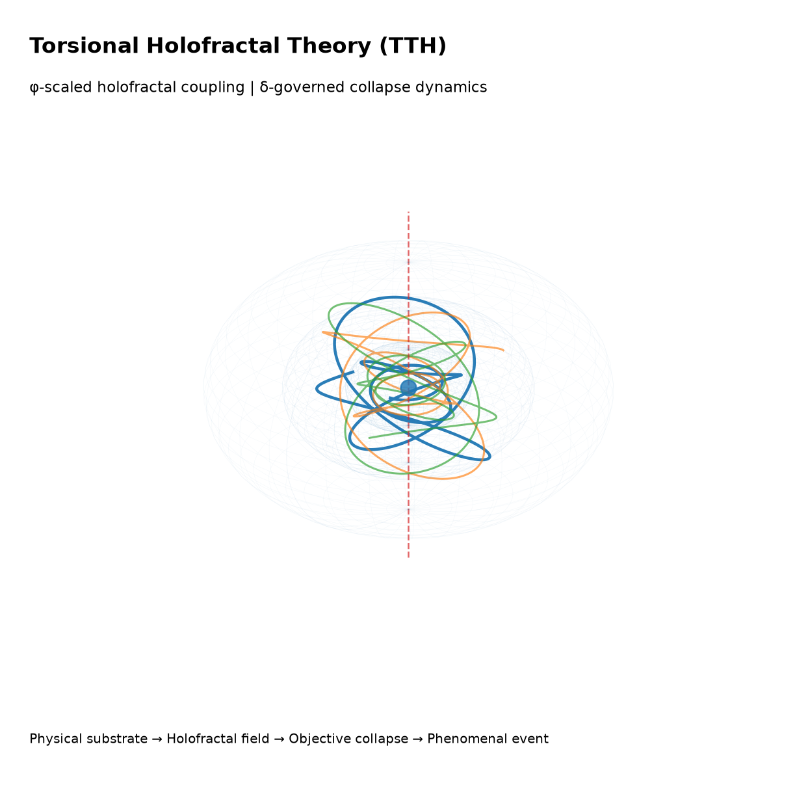

Research outputs
The TTH repository and associated manuscripts are archived with separate DOI records for reproducibility, citation, and long-term preservation.
Core idea
TTH extends Einstein–Cartan gravity with a holofractal scalar field φ(x), a golden-ratio vacuum scale, and a Feigenbaum-modulated potential. The framework generates coupled predictions across gravitational theory, quantum collapse, cosmology, and neurophysical dynamics.
Five falsifiable predictions
The framework is organized around testable consequences in cosmology, quantum optics, and neuroscience.
P1 · Cosmology
Log-periodic CMB modulation: δC_ℓ/C_ℓ ~ 2% sin(δ·ln ℓ).
P2 · Quantum optics
Ultra-cold neutron decoherence rate Γ_UCN ~ 10⁻⁶ Hz.
P3 · Neuroscience
EEG fractal dimension D_f^EEG = 1.599 during conscious wakefulness.
P4 · IIT bridge
Integrated information scales as Φ_IIT ∝ (D_f − 3)².
P5 · Entrainment
Schumann resonance at 7.83 Hz modulates D_f and PCI.
Validation path
Numerical simulations, CMB comparison, EEG/MFDFA, and TMS-EEG protocols.
Visual model
A compact visualization of torsional holofractal coupling, hierarchical structure, and objective collapse dynamics.

Physical substrate → Holofractal field → Collapse event → Phenomenal experience
The visual model summarizes the conceptual pipeline used throughout the repository: physical substrate, holofractal coupling, quantum coherence, objective collapse, and phenomenal integration.
Reproduce the repository
The repository includes LaTeX manuscripts, validation code, figure-generation scripts, and visual assets.
Run validations
cd code/validationpython run_all_tests.py
Generate figures
cd figures/scriptspython figures_1to7.py
Compile papers
cd papers/latexpdflatex paper1.tex